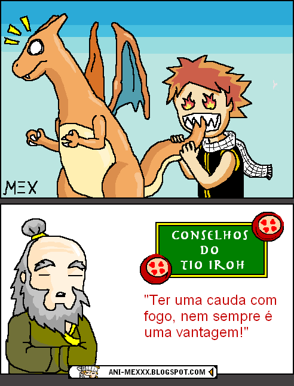

Fairy Tail

1° Temporada
Episódio 1 - Dublado - Cauda encantadaEpisódio 2 - Dublado - Dragão de fogo, Macaco e Touro
Episódio 3 - Dublado - Iniltre-se na mansãoEverlue!
Episódio 4 - Dublado - Querido Kaby
Episódio 5 - Dublado - A maga de armadura
2° Temporada
Episódio 1 - Dublado - Fadas ao ventoEpisódio 2 - Dublado - Fogo e vento
Episódio 3 - Dublado - O time mais forte
Episódio 4 - Dublado - Natsu come uma aldeia
Episódio 5 - Dublado - Natzu vs Ezra
Piadinhas
